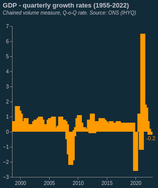

Portfolio
-
Week1: Building a site
Build your multi-page site. Host it on GitHub, with at least two pages: index (your portfolio) and project. Feel free to add more pages (about etc) and make your index and into page. If you do this make a clear portfolio page – this is what we will mark.
This Website is hosted via Github pages
-
Week2: Embedding
Embed three charts, two that are given to you in class. One (as homework) taken from the repository of charts that drive www.rapidcharts.io
 -
Week3: Hosting data
Embed two charts of your own design: (a) from a given API, (b) from the same/related data saved to your GitHub.
-
Week4: Editing data, writing JSON by hand
Two more charts. One where you change the data (add an observation, add a series, create a new series); One where the data is “in-line” JSON that you write. This second chart need only have 5 or so observations.
-
Week5: API driven charts
Embed two charts of your own design from two separate APIs that you sign up for & gain access to.
Crypto Portfolio $ Value
This chart fetches the price from Binance API
-
Week6: Loops and APIs
Colab Scraper -
Week7: Loops and scrapers
Build a scraper in Colab, save and chart the results.

-
Week8: Merging data
Build a chart with data from two separate sources. Plot these data using correlation, regression or some other technique.
Travel Ideas Location ETA/Duration Weather Blenhelm Palace ... ... Canterbury Cathedral ... ... Windsor Castle ... ... Stonehedge ... ... Peak District National Park ... ... This table combines data from weatherapi.com and google.com's direction API
Week9: Advanced analytics
Build and embed a chart that uses advanced statistical methods, testing causality or distribution
This website is hosted via github pages: https://yigewang0312.github.io/data-science/portfolio.html
Week10: Interactivity.
Build and embed two interactive charts.